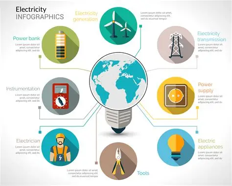

INFOGRÁFICO UTILIZADO NA ATIVIDADE MULTIDISCIPLINAR
Abaixo está o infográfico de suporte pedagógico obtido através do ambiente virtual Moodle.

 Educação Financeira
Educação Financeira
Abaixo está o infográfico de suporte pedagógico obtido através do ambiente virtual Moodle.
